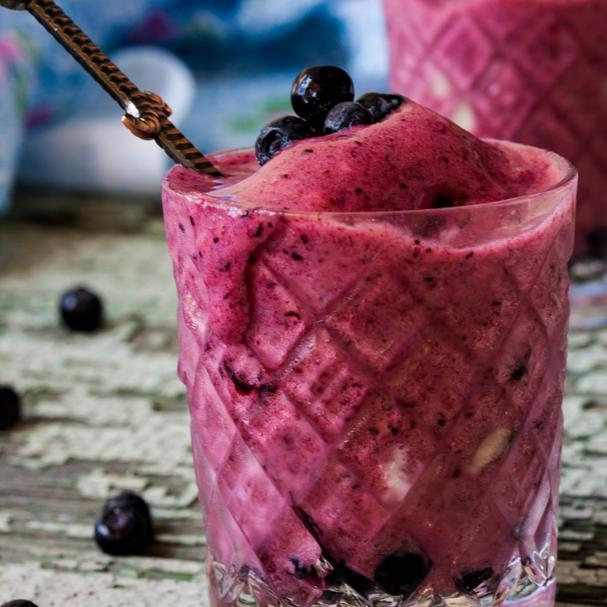

Spring is in the air and with the changing weather some might find the urge to reach for the sweets. Spring is the season of Kapha, the doshic combination of earth and fire elements. In Ayurveda, each of us has a unique mind-body type, known as a dosha (Google what's my dosha to find yours). According to top Ayurveda expert, Katie Silcox, New York Times celebrated author of Healthy, Happy, Sexy: Ayurvedic Wisdom for Modern Women, and Tantra Yoga expert, your sugar cravings could be your dosha talking. "In the spring, there are extra heavy, wet, and unctuous qualities in the air - ironically, we will often crave things that are exactly the opposite of what we need." So, if you're feeling out of balance and reaching for more sweet treats than usual, try Katie's delicious ice cream recipe to help squelch those cravings and keep Kapha balanced. This Ayurveda-approved ice cream is full of protein, only sweetened with fruit, contains brain-boosting herbs, and will help ease PMS symptoms and balance your hormones